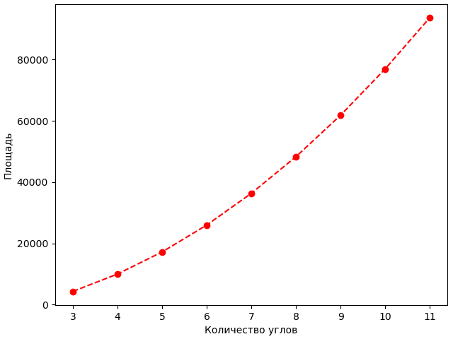
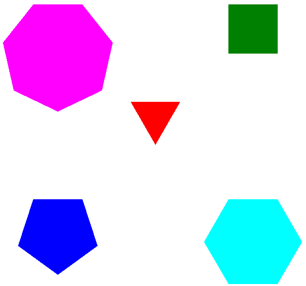
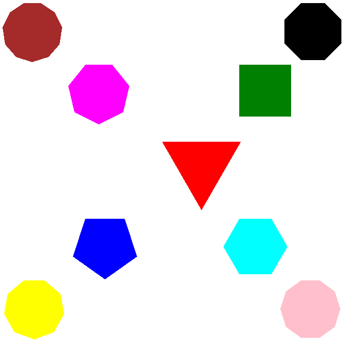

Черепашья графика, turtle – принцип организации библиотеки графического вывода, построенный на метафоре Черепахи, воображаемого роботоподобного устройства, которое перемещается по экрану или бумаге и поворачивается в заданных направлениях, при этом оставляя (или, по выбору, не оставляя) за собой нарисованный след заданного цвета и ширины.
Проще: черепашка ползает по экрану и рисует. Мы управляем черепашкой на плоскости при помощи программы.
В первой строке необходимо добавить:
import turtleМы командуем черепашкой простыми словами на английском языке. left, right – поворот налево и направо, forward и backward – движение вперед и назад. В программе каждое действие – вызов функции из модуля turtle. Простая программа:
import turtle
turtle.right(90)
turtle.forward(100)
turtle.left(90)
turtle.backward(100)

Что произошло:
Не похоже на черепашку, это ползающая стрелка! Исправим это:
import turtle
turtle.shape("turtle")
turtle.fd(100)
turtle.exitonclick()
Отлично! Теперь это черепашка, пусть и монохромная.
Дополнительно, функция exitonclick() позволяет закрыть окно и завершить выполнение программы кликом мышкой по окну.
А еще можно использовать сокращенные названия функций: fd(100) вместо forward(100),
rt вместо right, lt вместо left, bk вместо backward.
Рисуем простые геометрические фигуры:
Если мы хотим выполнить инструкции n раз, мы пишем их в цикле
for i in range(n):Далее идут инструкции с отступом в 4 пробела. Код с отступами – тело цикла. Когда цикл завершается, отступы больше не ставятся.
Рисуем квадрат:
import turtle
square = turtle.Turtle()
square.shape("turtle")
for i in range(4):
square.forward(100)
square.right(90)
turtle.exitonclick()

Скучно рисовать одинокие фигуры. Поэтому мы приготовились рисовать сразу несколько и теперь создаем отдельный экземпляр класса Turtle для каждой фигуры. Так мы можем менять цвет линии и другие параметры отдельно для каждой фигуры. Потом, когда мы захотим дорисовать или изменить параметры фигуры, у нее будут сохранены старые параметры. Их не надо будет устанавливать заново, как это было бы без отдельных экземпляров класса для каждой фигуры.
Звезда рисуется также:

При отрисовке простых фигур черепашка возвращалась в исходную точку, и программа останавливалась, ожидая, когда будет закрыто окно. Если в цикле продолжить рисовать по прежним инструкциям, фигура будет нарисована заново по уже нарисованным контурам. А если ввести дополнительный угол поворота?
import turtle
square = turtle.Turtle()
square.shape("turtle")
square.color('red', 'green')
square.begin_fill()
for j in range(3):
square.left(20)
for i in range(4):
square.forward(100)
square.left(90)
square.end_fill()
turtle.exitonclick()
Мы также добавили:
Напишем обобщенную программу рисования выпуклых равносторонних многоугольников. num_sides – количество граней, side_length – длина грани, angle – угол поворота.
import turtle
polygon = turtle.Turtle()
num_sides = 6
side_length = 100
angle = 360.0 / num_sides
for i in range(num_sides):
polygon.forward(side_length)
polygon.right(angle)
turtle.exitonclick()

Что будет, если на каждом шаге увеличивать длину пути? В первый день 10 шагов, во второй – 20, далее 30, 40 и так до 200:
import turtle
spiral = turtle.Turtle()
for i in range(20):
spiral.forward(i * 10)
spiral.right(144)
turtle.exitonclick()

Положение на плоскости определяется двумя числами, x и y:

Черепашку в программе можно перемещать функцией goto(x, y). x и y – числа, или переменные. goto(0, 0) переместит черепашку в начало координат.
import turtle
spiral = turtle.Turtle()
for i in range(20):
spiral.fd(i * 10)
spiral.rt(144)
spiral.goto(0,0)
turtle.exitonclick()
Вместо звезды-спирали мы получили 5 линий, расходящихся из точки начала координат.
Не хватает плавных изгибов? На помощь приходят функции dot() и circle():
import turtle
turtle.title("Turtle Drawing")
circle = turtle.Turtle()
circle.shape("turtle")
circle.pensize(5)
circle.pencolor("cyan")
circle.dot(20)
circle.penup()
circle.goto(0, -100)
circle.pendown()
circle.circle(100)
turtle.exitonclick()
Дополнительно мы:
Площадь квадрата со стороной 100 пикселей – 10 000 квадратных пикселей. Вычислим площади всех фигур со стороной 100 от треугольника до 7-угольника. Формула площади правильного многоугольника содержит тангенс, поэтому «поверим на слово» результату, зависимости количество углов (вершин) – площадь:
Изобразим ее на графике:
Получается, что площадь 7-угольника в 36339.12 / 4330.13 = 8.4 раза больше, чем площадь треугольника! Это очень заметно на рисунке:
Чтобы фигуры стали равновеликими, надо сделать длину грани вместо константы 100 – переменной, которая зависит от количества углов.
Как: приведем все площади к 10000. Для треугольника площадь увеличится на 10000 / 4330.13 = 2.31 раза. Для 7-угольника – уменьшится в 36339.12 / 10000 = 3.63 раз. Значит, стороны должны измениться в 1.52 и 0.52 раз соответственно, то есть, до 152 и 32.7 пикселей (снова «верим на слово»). Эту зависимость можно нащупать «на глаз», в чем и заключалось задание.
Наша программа без труда масштабируется до большего количества фигур:
Программа, в которой вычисляются точные значения:
import turtle
from math import tan, sqrt, pi
def prepare(x, y, color):
turtle.penup()
turtle.goto(x, y)
turtle.pendown()
turtle.color(color)
turtle.begin_fill()
def draw_polygon(num_sides, side_length):
angle = 360.0 / num_sides
for i in range(num_sides):
turtle.forward(side_length)
turtle.right(angle)
turtle.end_fill()
def calc_s(num_sides, side_length):
return num_sides * side_length ** 2 / (4 * tan(pi/num_sides))
def calc_side(square):
return sqrt(4 * square * tan(pi/num_sides) / num_sides)
turtle.hideturtle()
turtle.speed(10)
colors = ['red', 'green', 'blue', 'cyan', 'magenta', 'black', 'yellow', 'pink', 'brown']
xcoords = [0, 150, -150, 150, -150, 270, -270, 270, -270]
ycoords = [0, 150, -150, -150, 150, 270, -270, -270, 270]
squares = []
numsides = []
for i in range(9):
num_sides = i + 3
square = round(calc_s(num_sides, 100), 2)
side_length = round(calc_side(10000), 3)
squares.append(square)
numsides.append(num_sides)
print("Углов:", num_sides, "была площадь:", square, "стала длина грани:", side_length,
"изменение в", round(side_length/100, 2), "раз")
prepare(xcoords[i], ycoords[i], colors[i])
draw_polygon(num_sides, side_length)
turtle.exitonclick()
print("Список количество углов:", numsides, end="")
print("Список площади:", squares)Текстовый вывод:
Углов: 3 была площадь: 4330.13 стала длина грани: 151.967 изменение в 1.52 раз
Углов: 4 была площадь: 10000.0 стала длина грани: 100.0 изменение в 1.0 раз
Углов: 5 была площадь: 17204.77 стала длина грани: 76.239 изменение в 0.76 раз
Углов: 6 была площадь: 25980.76 стала длина грани: 62.04 изменение в 0.62 раз
Углов: 7 была площадь: 36339.12 стала длина грани: 52.458 изменение в 0.52 раз
Углов: 8 была площадь: 48284.27 стала длина грани: 45.509 изменение в 0.46 раз
Углов: 9 была площадь: 61818.24 стала длина грани: 40.22 изменение в 0.4 раз
Углов: 10 была площадь: 76942.09 стала длина грани: 36.051 изменение в 0.36 раз
Углов: 11 была площадь: 93656.4 стала длина грани: 32.676 изменение в 0.33 раз
Список количество углов: [3, 4, 5, 6, 7, 8, 9, 10, 11]
Список площади: [4330.13, 10000.0, 17204.77, 25980.76, 36339.12, 48284.27, 61818.24, 76942.09, 93656.4]Как построить график (если кто захочет):
pip install matplotlibimport matplotlib.pyplot as plt
numsides = [3, 4, 5, 6, 7, 8, 9, 10, 11]
squares = [4330.13, 10000.0, 17204.77, 25980.76, 36339.12, 48284.27, 61818.24, 76942.09, 93656.4]
plt.plot(numsides, squares, 'or--')
plt.xlabel('Количество углов')
plt.ylabel('Площадь')
plt.show()import turtle
turtle.title("Turtle Circles")
circ = turtle.Turtle()
circ.pencolor("purple")
circ.fillcolor("orange")
circ.shape("circle")
circ.pensize(5)
circ.speed(10)
circ.fd(150)
circ.begin_fill()
circ.circle(90)
circ.end_fill()
n = 10
t = turtle.Turtle()
while n <= 50:
t.circle(n)
n += 10
turtle.exitonclick()
Что произошло:
Затем:
Нарисуем прямоугольник и сделаем его кнопкой: при нажатии кнопка исчезает и появляется круг:
import turtle
wndow = turtle.Screen()
wndow.title("Screen & Button")
wndow.setup(500, 500)
btn1 = turtle.Turtle()
btn1.hideturtle()
for i in range(2):
btn1.fd(80)
btn1.left(90)
btn1.fd(30)
btn1.left(90)
btn1.penup()
btn1.goto(11,7)
btn1.write("Push me", font=("Arial", 12, "normal"))
def btnclick(x, y):
if 0<x<80 and 0<y<30:
print("Кнопка нажата!")
btn1.clear()
ball = turtle.Turtle()
turtle.fillcolor("orange")
turtle.pencolor("purple")
turtle.shape("circle")
turtle.listen()
turtle.onscreenclick(btnclick, 1)
turtle.done()
Что произошло:
Задаем поведение кнопки:
from random import randrange
print(randrange(30, 201)) # случайное целое число от 30 до 200
from random import randrange
circle = turtle.Turtle()
circle.circle(randrange(36, 91))
from random import randrange
figures = ['circle', 'rectangle', 'triangle']
choice = figures[randrange(0, 3)] # случайный индекс от 0 до 2 даст одно из трех слов списка
from random import randrange, choice
colors = ['red', 'green', 'blue']
color = colors[randrange(0, 3)]
another_color = choice(colors)
Итак, мы умеем рисовать фигуры разных форм и стилей, перемещать курсор в разные точки холста, а также обрабатывать клик мышкой по фигуре. Добавим к этим действиям обработку нажатий клавиш. Для этого существуют две функции:
Клавиша задается строкой с ее названием. Например, 'space' – пробел, 'Up' (с заглавной буквы) – стрелка вверх. Клавиши букв задаются заглавными, только если мы хотим нажать именно заглавную (с Shift или Caps Lock).
По нажатию клавиши мы будем перемещать фигуру. Для этого понадобятся функции, которые сообщают и изменяют координаты:
Создадим экземпляр класса Turtle и выведем его координаты:
import turtle
circ = turtle.Turtle()
circ.shape("circle")
circ.color("orange")
circ.penup()
print(circ.xcor(), circ.ycor())Получили вывод "0.0 0.0". Теперь напишем функцию up(), которая будет запускаться при нажатии стрелки вверх и перемещать наш circ на 10 пикселей вверх:
import turtle
circ = turtle.Turtle()
circ.shape("circle")
circ.color("orange")
circ.penup()
def up():
y = circ.ycor() + 10
circ.sety(y)
turtle.listen()
turtle.onkeypress(up, 'Up')
turtle.done()Очень похоже на нажатие мышкой! Функцию up() можно сократить до одной строчки:
def up(): circ.sety(circ.ycor() + 10)Будет работать, но функции в одну строчку писать не принято. Для таких случаев используют анонимные функции: у них может вовсе не быть имени. В Python в качестве анонимных функций используются лямбда-выражения, мы их уже использовали для сортировки. Так будет выглядеть лямбда-функция up:
up = lambda: circ.sety(circ.ycor() + 10)Она используется у нас только в одном месте, внутри функкии turtle.onkeypress(). А почему бы не соединить их вместе? Так будет выглядеть наша программа в сокращенном виде:
import turtle
circ = turtle.Turtle()
circ.shape("circle")
circ.color("orange")
circ.penup()
turtle.listen()
turtle.onkeypress(lambda: circ.sety(circ.ycor() + 10), 'Up')
turtle.done()Всего 8 строк, и функции действительно не понадобилось имени! Как видим, язык Python дает возможность писать разными стилями, и мы можем выбирать на свой вкус: писать развернуто и красиво (как писал Гавриил Романович Державин) или кратко (как Эрнест Хемингуэй).
У нас уже есть кнопка с текстом и обработчик клика мышкой. Соединим все в одну программу:
import turtle
wndow = turtle.Screen()
wndow.title("Circle game")
wndow.setup(500, 500)
btn1 = turtle.Turtle()
btn1.hideturtle()
for i in range(2):
btn1.fd(80)
btn1.left(90)
btn1.fd(30)
btn1.left(90)
btn1.penup()
btn1.goto(4, 5)
btn1.write("Start!", font=("Arial", 12, "normal"))
circ = turtle.Turtle()
circ.hideturtle()
circ.shape("circle")
circ.color("orange")
def btnclick(x, y):
if 0<x<80 and 0<y<30:
btn1.clear()
circ.showturtle()
circ.penup()
turtle.listen()
turtle.onscreenclick(btnclick, 1)
turtle.onkeypress(lambda: circ.sety(circ.ycor() + 10), 'Up')
turtle.done()Есть стартовый экран, управляемый с клавиатуры персонаж... Добавим препятствие, и уже почти готова игра!
import turtle
wndow = turtle.Screen()
wndow.title("Circle game")
wndow.setup(500, 500)
btn1 = turtle.Turtle()
btn1.hideturtle()
for i in range(2):
btn1.fd(80)
btn1.left(90)
btn1.fd(30)
btn1.left(90)
btn1.penup()
btn1.goto(4, 5)
btn1.write("Start!", font=("Arial", 12, "normal"))
circ = turtle.Turtle()
circ.hideturtle()
circ.shape("circle")
circ.color("orange")
sq = turtle.Turtle()
sq.hideturtle()
sq.penup()
sq.setposition(-20, 70)
def btnclick(x, y):
if 0<x<80 and 0<y<30:
btn1.clear()
circ.showturtle()
circ.penup()
sq.pendown()
print("sq position:", sq.xcor(), sq.ycor())
for i in range(4):
sq.fd(40)
sq.rt(90)
def up():
y = circ.ycor() + 10
circ.sety(y)
if -20<circ.xcor()<20 and 30<circ.ycor()<70:
circ.hideturtle()
sq.clear()
circ.write("Game over!", font=("Arial", 12, "bold"))
turtle.listen()
turtle.onscreenclick(btnclick, 1)
turtle.onkeypress(up, 'Up')
turtle.done()